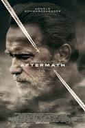

Date of Release : April 7, 2017
Cast :
- Arnold Schwarzenegger as Roman Melnyk
- Scoot McNairy as Jacob "Jake" Bonanos
- Maggie Grace as Christina
- Martin Donovan as Robert
- Hannah Ware as Tessa
- Mariana Klaveno as Eve Sanders
- Kevin Zegers as John Gullick
- Larry Sullivan as James Gullick
- Teri Clark Linden as Airline Supervisor
Description :
Aftermath (originally titled 478) is a 2017 American drama thriller film directed by Elliott Lester and written by Javier Gullón.
The film stars Arnold Schwarzenegger, Scoot McNairy, Maggie Grace and Martin Donovan. The film was released on April 7, 2017, by Lionsgate Premiere.
The film is based on the Überlingen mid-air collision though the names, places and incidents were changed.